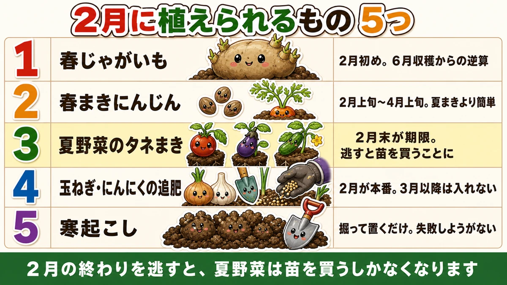
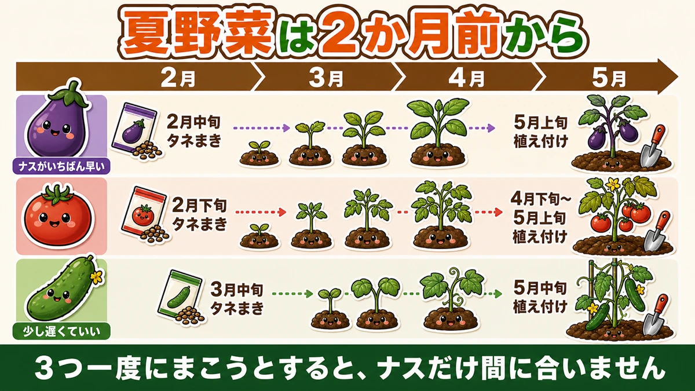
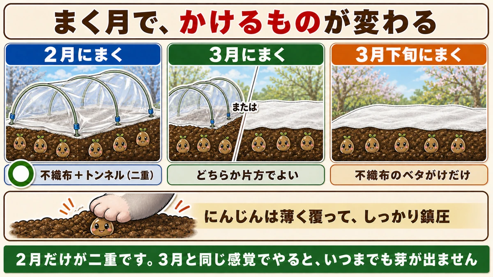

It's still cold, and it has already started 🌱 What to sow in February
🗨️ "There's nothing to do in February."
🗨️ "I was going to start when it warmed up."
🗨️ "And suddenly it's the season for buying plants."
Hello, I'm Eiko. Eight years of growing vegetables organically and without pesticides, and a teaching licence in science.
The monthly instalment — February. A month of frost in the mornings and no enthusiasm for going outside, and plenty of people write it off entirely.
That was my mistake for several years.
The point, up front:
Miss the end of February and your summer crops can only be bought as plants.
Tomatoes, aubergines and cucumbers are planted out in late spring. Grown from seed, they have to be sown two months before that — which lands at the end of February ☺️
Five things for February

What this diagram says （図解の文字）
- Five things you can do in February
- 1 Spring potatoes — early February, working back from an early-summer harvest
- 2 Spring carrots — early February to early April; easier than a summer sowing
- 3 Sowing the summer crops — the end of February is the deadline; miss it and you're buying plants
- 4 Onions and garlic…
① Spring potatoes
Potatoes must be lifted before the heat kills the tops, and working back from that, they go in at the start of February.
If you've been chitting them on a windowsill since January, they're about ready: squat green shoots around 5 mm. Thin, white and stretched means not enough light.
No fertiliser and no lime, so preparation is just making the ridges. Potatoes are the rare crop that does better in poor soil.
One thing to watch is where. Avoid a bed that held spinach — the soil is left slightly alkaline and potatoes get scab in those conditions — and avoid beds that held tomatoes, aubergines or peppers, which are the same family.
② Spring carrots
Carrots can be sown twice a year, and the spring sowing is the easier one.
Two reasons. Fewer pests and diseases — and the bigger one: the main cause of carrot failure is drying out, and in February nothing dries.
The window runs from early February to early spring — and there's a deadline, because a late sowing bolts.
The mechanism: a plant that has reached a certain size and is then chilled concludes it has overwintered, and sets flower buds. Sow too late and the temperature rises before the root has bulked. Aim for February into early March.
③ Sowing the summer crops — the real deadline
Tomatoes, aubergines and cucumbers need sowing two months before planting out.
Simple arithmetic — and standing in a February garden it feels far too early. I lost to that feeling more than once.
Three reasons to grow your own from seed:
- you watch it change daily from germination — the best part
- you can grow unusual varieties that are never sold as plants
- it's far cheaper
The second is the one I value most. A garden centre stocks the popular varieties; seed offers dozens of times the choice.

What this diagram says （図解の文字）
- Summer crops start two months ahead
- Aubergine is the earliest — sow mid February, plant out early May
- Tomato — sow late February, plant out late April to early May
- Cucumber — a little later is fine: sow mid March, plant out mid May
- Aubergine — sow mid February → plant out in late spring. The earliest of the three
- Tomato — sow late February → plant out in mid-to-late spring
- Cucumber — sow mid March → plant out in late spring. It can be later
Aubergine is first because it wants the highest temperatures to germinate and grow, and so takes longest to make a plant. Sow all three on the same day and the aubergine is the one that won't be ready.
④ Feeding onions and garlic
Growth restarts this month after the winter pause. Feed now and it's available for the spring bulking.
And note: this is effectively the last feed. Fed later than this, onions don't keep.
⑤ Winter digging and bed preparation
Anywhere not yet planted, turn the soil over and leave it. Freeze, thaw, repeat, and the clods crumble into something no tool produces. And overwintering eggs are turned up to freeze or be eaten by birds.
Don't break the clods. More surface area means more freeze-thaw cycles — tidying it up works against you.
The attraction of this job is that it can't be done wrong. Dig, and leave. The cold does the rest.
February protection is doubled

What this diagram says （図解の文字）
- What you cover with changes by month
- ○ Sown in February — fleece plus a film tunnel (two layers)
- Sown in March — either one is enough
- Sown in late March — fleece laid straight over is enough
- Carrots: cover thinly and firm well
February is the only month that needs two layers. Treat it like March and the seed never comes up.
- Sow, then lay fleece directly on the soil
- Hold the edges down with soil or pins
- Hoops over it, with film
- Bury the hem to seal it
"Sealed" with one caveat: on a sunny day the inside can exceed 30 °C. Once the seedlings are up, open an end and let air through.
In winter, naked seed has the advantage
Pelleted seed — coated in clay to make small seed easier to handle — is fine in itself, and in cold weather it's at a disadvantage.
The coating has to absorb water and break down before the seed inside can start, and in cold, slow conditions that extra step costs days and sometimes the germination.
For a February sowing, choose naked seed where you have the choice.
Things not to do in February
- Don't feed onions and garlic more because they look small — the roots are the work being done
- Don't sow summer crops outdoors. They need warmth; raise them under cover
- Don't work wet soil. Frost and thaw keep it damp, and digging it wet sets it hard for the season
February is the month of working backwards
Everything above is one calculation: harvest date → planting date → sowing date.
- Potatoes lifted before the heat → planted at the start of February
- Summer crops planted in late spring → sown two months earlier
- Carrots bulked before it warms → sown February into early March
None of it is about how the garden feels today. It's about what has to be true in four months ☺️
To sum up
- ✅ Miss the end of February and summer crops have to be bought
- ✅ Potatoes at the start of February; no feed, no lime
- ✅ Avoid beds that held spinach or nightshades
- ✅ Spring carrots are easier than summer ones — nothing dries out
- ✅ Sow carrots February into early March or they bolt
- ✅ Aubergine mid February, tomato late February, cucumber mid March
- ✅ Aubergine is first because it needs the most warmth
- ✅ Feed onions and garlic — effectively the last feed
- ✅ Dig and leave; don't break the clods
- ✅ February sowings need two layers: fleece plus film
- ✅ Open the tunnel once seedlings are up
- ✅ Carrots: thin covering, firm well, water
- ✅ Naked seed beats pelleted in the cold
- ✅ Don't work wet soil
You don't have to do all of it. Put one date in the calendar: "sow tomatoes", at the end of February. That line is the difference between growing what you chose and buying what's left 🌱
Thank you for reading!